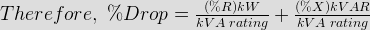

- In transformer core stacking factor varies from
Core of transformer is prepared by stacking together thin sheets of lamination giving the required core section. Gross core section is related with net core section by a factor called stacking factor.
∴ Ks = 0.85 - 0.90. - Which transformer is designed to have maximum efficiency at or near full load?
Power transformer are allowed to work at or near full load and switched off during light load hours whereas distribution transformer have to work all time throughout 24 hrs a day.
- In distribution transformer which winding is used?
In distribution transformer sandwitched winding is preferred to minimize the leakage reactance to have inherently a good voltage regulation.
- Crossover coils are used for winding of transformer's
The HV winding has large no. of turns which in a crossover winding can be easily divided into no. of coils depending upon the voltage rating.
- Phase difference in ac 2 phase coil is
Phase difference in ac 2 phase coil is 90°. 120° phase difference is observed in 3 phase ac coils.
- A transformer has 720 primary turns and 120 secondary turns. If the load current is 12 A its primary load component of current is
- A transformer with an output voltage 2400 V, is supplied at 230 V. If secondary has 2000 turns,calculate the number of primary turn will be
- Hysteresis loss equation of transformer for unit volume of core is
The hysteresis losses given as,
Here, Kh = hysteresis coefficient
Bm = Maximum flus density
x = a constant, between 1.5 and 2.5
f = frequency
v = volume of the core material.
As here volume is taken as unity so,

- _________________________ can be tested for determining the maximum temperature rise by back to back test called Sumpner's test.
Large transformers can be tested for determining the maximum temperature rise by back to back test called Sumpner's test or regenerative test.
- Which transformer is used to operate 24 hrs a day?
- Which statement is true regarding auto-transformer losses?
In an auto transformer electrical power is transferred from primary to secondary partly by process of transformation and partly by direct electrical connection. Power conductively transferred produces no transformer losses.
- In a transformer, the core loss is 100 W at 40 Hz and 72 W at 30 Hz. The hysteresis loss at 50 Hz will be
Solution of these equations gives, a = 2.1, b = 0.01
Therefore, hysteresis loss at 50 Hz will be = af = 2.1 × 50 = 105 Watt. - At 400 V and 50 Hz the total core loss of a transformer was found to be 2400 W. When the transformer is supplied at 200 V and 25 Hz the core loss is 800 W. The eddy current loss at 400 V 50 Hz will be
Since,
The flux density Bm remains constant.

Solving equation, a = 16, b = 0.64
Therefore, at 50 Hz
- A transformer having % resistance of 2.5 % and % reactance of 5 % of rating 500 kVA when its delivering 400 kVA at 0.8 p.f. lagging, the percentage voltage drop will be
Where If is the full load current and I be the actual current

In the present case, kW = 400 × 0.8 = 320 and kVAR = 400 × 0.6 = 240
- A 230 / 460 V transformer has a primary resistance of 0.2 Ω and a reactance of 0.5 Ω and corresponding secondary values are 0.75 Ω and 1.8 Ω. The secondary terminal voltage when supplying 10 A at 0.8 p.f. lagging will be
- The maximum flux density in the core of a 250 / 3000 V, 50 Hz single phase transformer is 1.2 wb / m2. If the emf per turn is 8 Volt then area of the core is

- The core of a 100 kVA, 11000 / 550 V, 50 Hz, 1 phase, core type transformer has cross section of 20 cm × 20 cm and maximum flux density 1.3 T. The number of H.V and L.V turns per phase will be
- An auto transformer supplies load of 5 kW at 115 V and at unity p.f. If the primary voltage is 230 V, then the transformation ratio will be
We know transformation ratio of an auto transformer is given by
Therefore, transformation ratio will be,
- An auto transformer supplies a load of 5 kW at 115 V and at unity power factor. If the primary voltage is 230 V then the secondary current will be
We know power output of an transformer is,

- An auto transformer supplies a load of 5 kW at 110 V at unity p.f., if the applied primary voltage is 220 V then the inductive power transferred to the load be
Input volt-ampere of auto transformer
Inductively transferred volt-amperes,
=V_LI_L(1-\frac{I_H}{I_L}) = S_{in}(1-\frac{1}{2}) = 5\times\frac{1}{2}= 2.5\; kVA")
Power transferred inductively = Stransformed × power factor = 2.5 × 1 = 2.5 kW.
 = 10 ( 1.55 \times 0.8 + 3.8 \times 0.6 ) = 35.2\; Volt.")
Design with  by SARU TECH
by SARU TECH
www.sarutech.com
Content Credited to electrical4u.com
Online Electrical Engineering Study Site